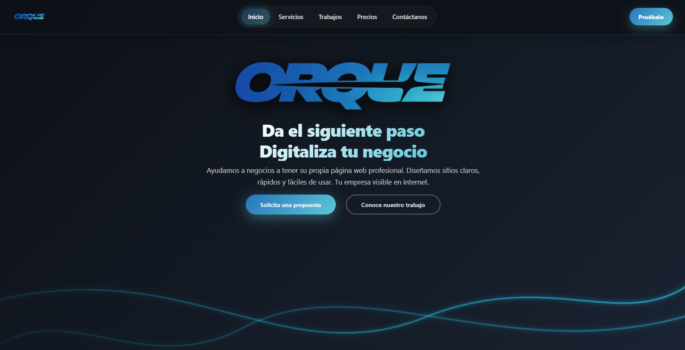

ORQUE
ORQUE nació con dos compañeros para crear webs a medida con HTML, CSS y JavaScript.
El proyecto me enseñó a captar clientes, entender lo que necesitaban de verdad y convertirlo en una web clara, rápida y con buen SEO.

También aprendí a ordenar mejor el contenido para que cada web se entienda al instante.
La combinación de diseño, comunicación y posicionamiento fue clave para hacer un proyecto más sólido.